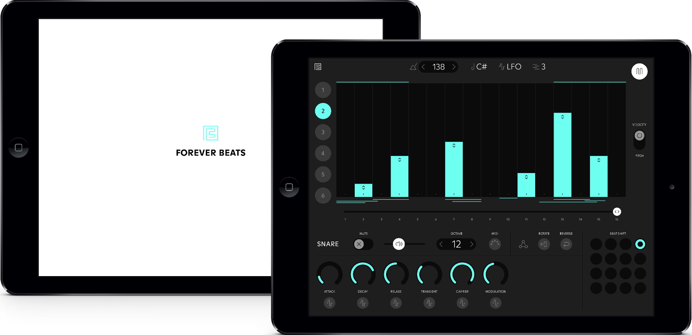

Forever Beats
Project Description
Forever Beats was a commercially available groove box for iOS. It featured an FM powered sound engine that could produce percussive and melodic sounds in six distinctive mono voices. The sounds were controlled with an in-built sequencer. It was also capable of sequencing external hardware. It is best understood as an Elektron Model:Cycles for iPad with a touch screen and additional beat shuffling options.
The app was well received by users at the time and had a 4.5 rating on the App Store.
Technical Overview
The project was largely implemented in the Swift programming language. The sound engine was implemented in pure data using the pd-for-ios library, which communicated with the rest of the program through an Objective-C bridge.
The sound engine featured 6 synthesised voices, 4 of which were fairly standard synthesised drums sounds. The other two voices were designed by Mei-Fang Liau and were capable of a broad range of textural and melodic sounds. The sequencer featured a custom beat shuffling option, allowing the user to algorithmically generate beat variations during live performance.